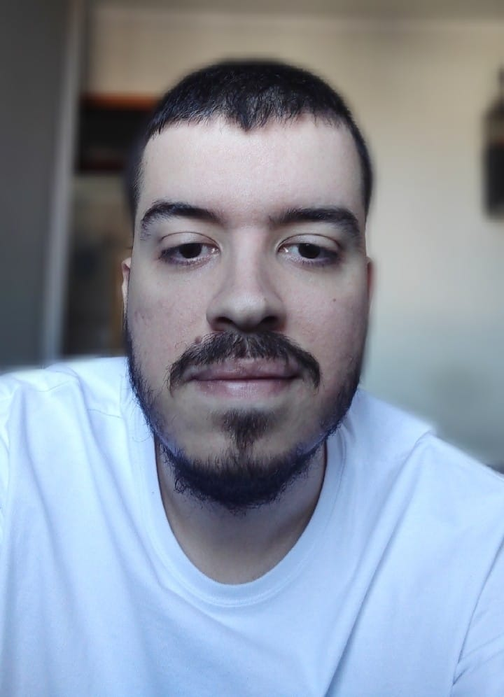

ÍNDICE
Hello world! Meu nome é Victor Trevisan, sou brasileiro, nascido em 1998 em Guarulhos-SP mas passei a maior parte da minha vida na zona Oeste de São Paulo.
Uma lista de habilidades que você possui, com destaque para aquela de que você mais se orgulha;CURIOSIDADE E DEDICAÇÃO
Um link externo para algum blog de que você goste, que abra em uma nova aba;https://waitbutwhy.com/